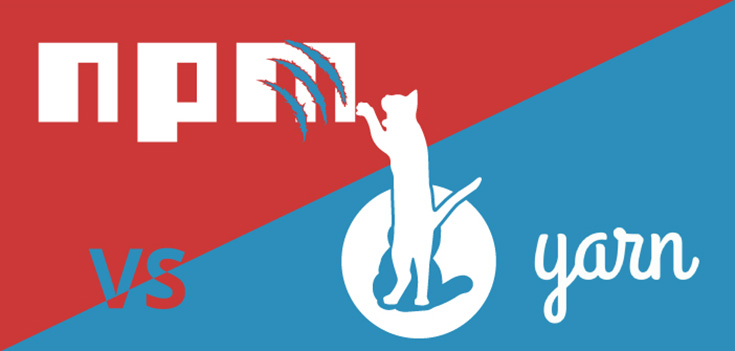
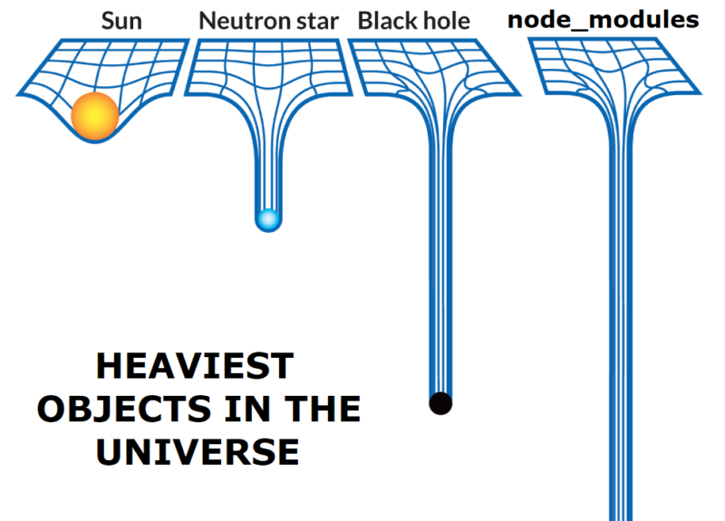
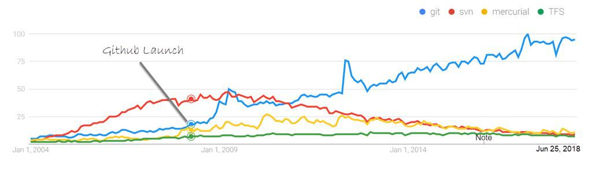
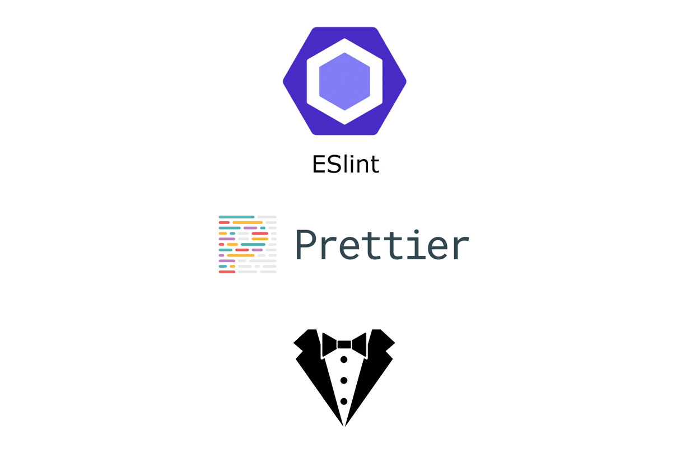
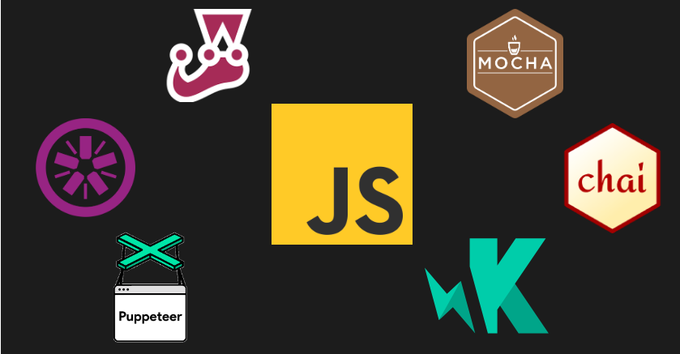
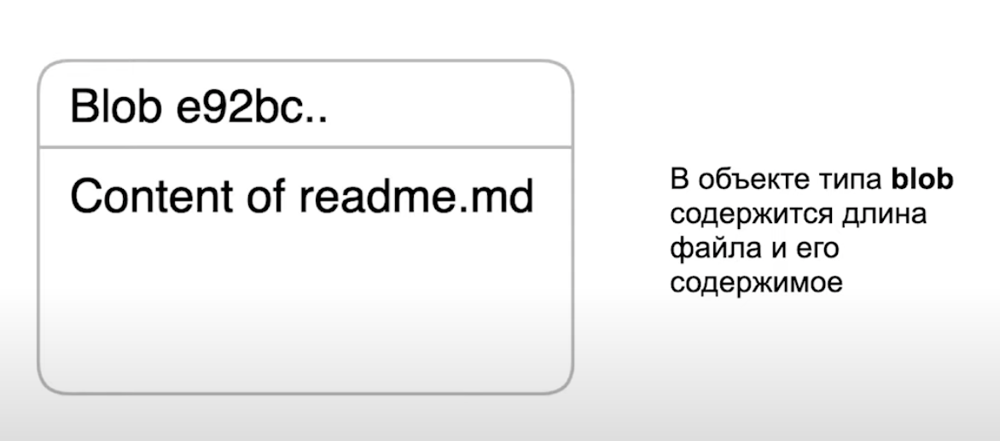
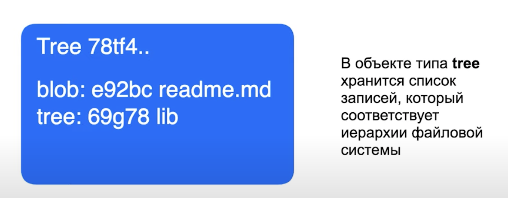
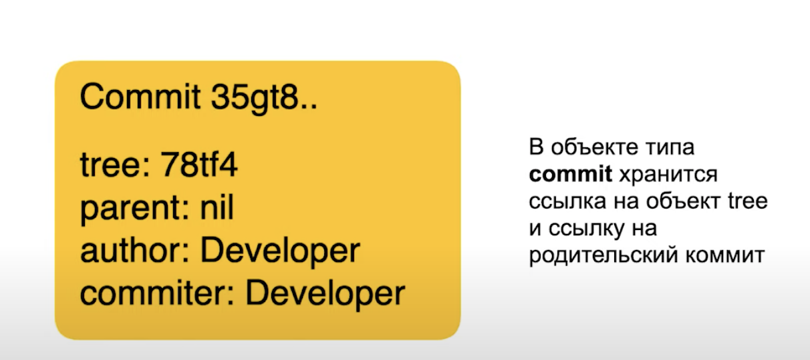
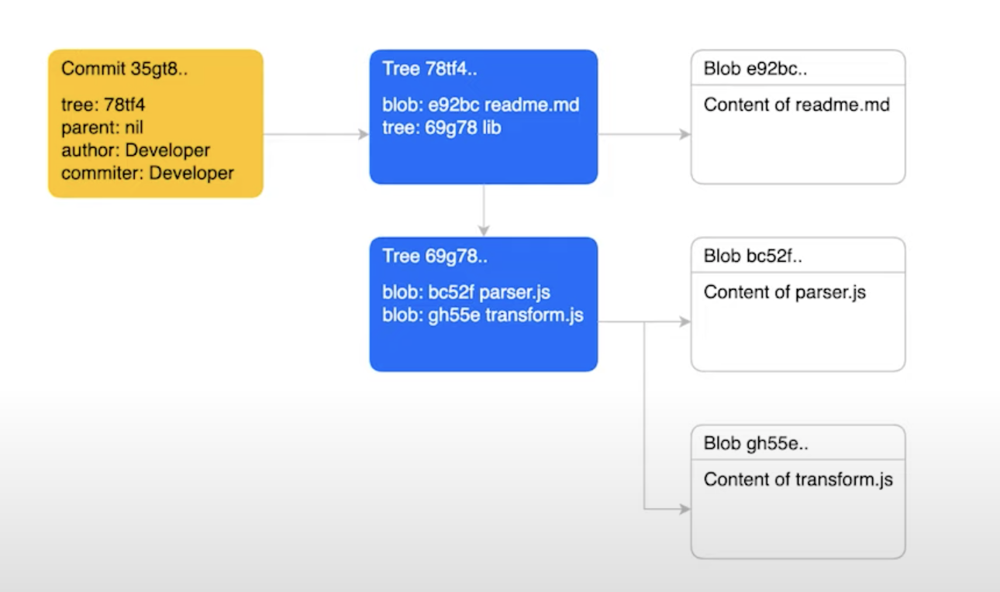
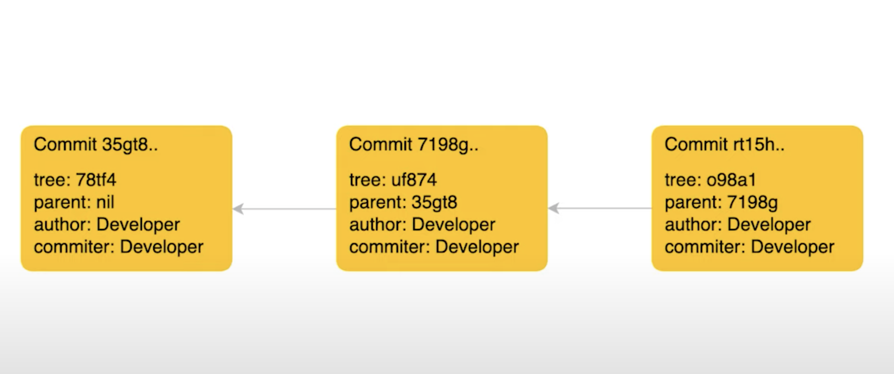

Инфраструктура проектов
План на сегодня
Поговорим о инфраструктуре проекта
Познакомимся с системой контроля версий Git
Создадим свой первый JS проект
Задачи Инфраструктуры
Хостинг
Инструментарий разработки
Корректная интеграция изменений
Быстрая доставка фитч
Релизный цикл с возможностью отката
Мониторинг здоровья сервиса
Задачи Инфраструктуры
Хостинг
Инструментарий разработки
Корректная интеграция изменений
Быстрая доставка фитч
Релизный цикл с возможностью отката
Мониторинг здоровья сервиса
Документация/Спецификация
Инструментарий разработки ???
Менеджер зависимостей

Менеджер зависимостей
npm
yarn
bower (устаревший)
NPM
Менеджер зависимостей для Node.js
Реестр пакетов npm
Клиент командной строки
Хранение зависимостей

Система контроля версий

Линтеры и стайлеры

Линтеры и стайлеры
Тесты

GIT
Преймущества системы контроля версий
Возможность отслеживать изменения
Ведение паралельной разработки
Git состоит из трёх сужностей
Blob
Tree
Commit
Blob

Tree

Commit

Общая картина

Однонаправленный список

Инициализация
git init
Файл может находиться в трёх состояниях
в дериктории
в индексе
в репозитории
Проверить статус
git status
Добавление файл в индекс
git add
git add --all
git add [шаблон]
Создание коммита
git commit
git commit -m
git commit --amend
Ветки
git branch
Указывают на коммиты
Перемещаются при создании новых коммитов
Ветка по умолчанию master
HEAD указатель на текущюю ветку
О чём мы сегодня говорили
Инфраструктура проекта
Обсудили инструментарий разработки
Познакомились с Git
Осталось только
Создать свой первый JS проект
Практика